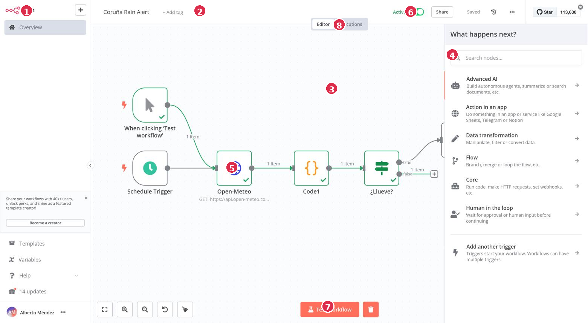
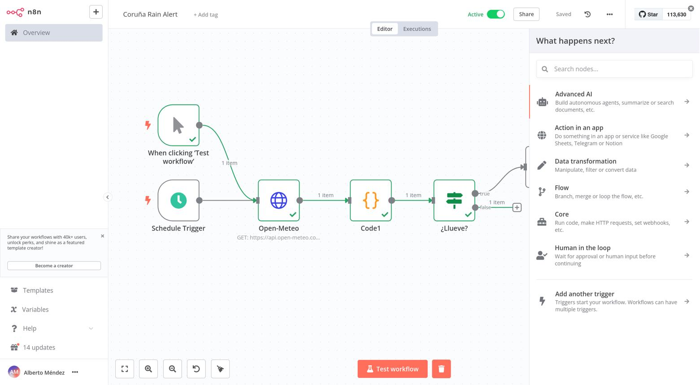

Understanding the n8n Interface
Learn to navigate the platform effectively: where to create workflows, how to add and connect nodes, how to execute them, and how to manage them.
n8n Dashboard
The n8n dashboard is the main interface from which you manage your automation environment. Think of it as the control center of your automation platform.
1.1 What Does the Dashboard Give Access To?
- Workflows.
- Executions.
- Credentials.
- Projects.
- Templates.
- Personal settings.
- Instance administration (depending on edition and permissions).
1.2 Understanding the Dashboard
When you log in to n8n, you generally work with the Overview section. The main sections are:
| Section | Purpose |
|---|---|
| Overview | View and manage workflows |
| Personal | Access your personal workspace |
| Projects | Organize workflows and credentials |
| Credentials | Manage application authentication |
| Executions | Review workflow execution history |
| Templates | Discover ready-made workflows |
| Settings | Configure personal or instance settings |
1.3 What Can You Do from the Dashboard?
Consider a scenario where you have developed 20 automation workflows. You can use the dashboard to:
- View all workflows
- Search for a particular workflow
- Create new workflows
- Open existing workflows
- Organize workflows
- Review executions
- Manage credentials
After opening your n8n instance:
- Navigate to Overview.
- Explore the left navigation panel.
- Find the workflow section.
- Open the Credentials section.
- Explore Executions.
- Find the Templates section.
- Identify the Settings section.
Done when: you understand the navigation structure of n8n.
Workflow Editor
The Workflow Editor is the primary development environment where you create, configure, connect, test and manage automation workflows. It provides a visual interface for building automation logic.
2.1 Think of the Workflow Editor As…
Similarly, the n8n Workflow Editor is where you develop automation solutions.
2.2 Main Components of the Workflow Editor
| Component | Responsibility |
|---|---|
| Header | Workflow name and publishing controls |
| Canvas | Design workflows |
| Node panel | Search and select nodes |
| Configuration panel | Configure individual nodes |
| Execution controls | Execute and test workflows |
| Workflow menu | Import, export and manage workflows |
| Execution view | Inspect execution results |
2.3 How to Create a Workflow
2.4 Example
Requirement: Generate a welcome message.
Canvas
The Canvas is the main working area inside the Workflow Editor. It is where you visually design automation workflows by adding nodes and connecting them.
Schedule Trigger
│
HTTP Request
│
Edit Fields
│
IF Node
┌────┴────┐
True False
│ │
▼ ▼
Email Database
All these nodes are placed on the canvas.
3.2 Canvas Functionalities
| Functionality | Purpose |
|---|---|
| Add Node | Add new nodes |
| Move Node | Change node position |
| Connect Nodes | Define workflow execution paths |
| Zoom In | Increase canvas magnification |
| Zoom Out | Decrease magnification |
| Fit View | Display all nodes |
| Tidy Up | Automatically organize nodes |
| Sticky Notes | Add documentation |
| Execute Workflow | Run workflow manually |
3.3 Understanding Node Positioning
Consider a workflow with 15 nodes. If all nodes are placed randomly, understanding the execution flow becomes difficult. Therefore, organize nodes logically. Recommended structure:
This makes workflows easier to understand and maintain.
3.4 Sticky Notes
Sticky Notes allow you to document workflow logic directly on the canvas.
┌──────────────────────────────────┐ │ BUSINESS REQUIREMENT │ │ │ │ Retrieve failed ADF pipelines. │ │ Identify error categories. │ │ Store failures in SQL Server. │ │ Notify support team. │ └──────────────────────────────────┘
Use Sticky Notes to document:
- Business requirements.
- Workflow purpose.
- Data source details.
- Important conditions.
- Error-handling logic.
Node Panel
The Node Panel is the interface used to search, browse and select nodes. Whenever you want to add functionality to a workflow, you use the Node Panel.
For example, to connect to SQL Server you open the Node Panel and search for SQL Server. n8n displays the relevant integration and available operations.
4.2 How to Open the Node Panel
- Open a workflow.
- Select Add First Step if the workflow is empty.
- Alternatively, click the Add Node connector on the canvas.
- Search for the required node.
- Select the node.
4.3 Categories of Nodes
| Category | Examples | Purpose |
|---|---|---|
| Trigger | Schedule, Webhook | Start workflows |
| Application | Gmail, Outlook | Connect applications |
| Database | PostgreSQL, MySQL | Database operations |
| API | HTTP Request | API integration |
| Logic | IF, Switch, Merge | Control execution |
| Data | Edit Fields, Aggregate | Transform data |
| Programming | Code | Custom logic |
| AI | AI Agent, OpenAI | AI processing |
4.4 Searching for Nodes
Suppose you want to send an email. Search for Microsoft Outlook. You may find operations such as:
- Send Message.
- Get Message.
- Get Many Messages.
- Reply to Message.
The available operations depend on the integration.
4.5 Built-in Nodes vs Community Nodes
🧩 Community nodes
- Created by external developers or organizations
- Extend n8n functionality
- Require additional security consideration — they execute third-party code
✅ Built-in nodes
- Provided by n8n
- Examples: HTTP Request, Code, IF, Schedule Trigger
Search for these 10 nodes and understand the purpose of each:
- Manual Trigger.
- Schedule Trigger.
- Webhook.
- HTTP Request.
- Edit Fields.
- IF.
- Switch.
- Code.
- PostgreSQL.
- Microsoft Outlook.
Official documentation: n8n Built-in Nodes
Connections
Connections define how nodes are linked together. They determine the execution path of a workflow and connect the output of one node to the input of another.
5.2 Types of Connections
1. Main connection — normal workflow data flow
2. Branching connection — different execution paths
IF Node
┌───┴───┐
True False
│ │
▼ ▼
Email Teams
3. Merge connection — combining multiple paths
API 1 API 2
│ │
└─────┬──────┘
▼
Merge
│
Final Output
4. AI connections
n8n also supports specialized connections for AI components, which are different from normal main connections:
- AI Agent to Chat Model.
- AI Agent to Memory.
- AI Agent to Tools.
5.3 Understanding Connection Direction
Connections are directional. Normally, data moves from the source node towards the destination node.
Create this workflow:
- Manual Trigger → Edit Fields → IF Condition.
- IF True branch → Email; False branch → Teams.
- Configure the IF node to check whether a salary is greater than ₹50,000.
Done when: you understand connections, branching and execution paths.
Workflow Settings
Workflow Settings control the behaviour of an individual workflow. They allow you to configure execution-related properties and other workflow-level options. Open a workflow and explore its Settings section.
6.2 Important Workflow Settings
| Setting | Purpose |
|---|---|
| Timezone | Controls workflow timezone where applicable |
| Execution Order | Controls node execution ordering behaviour |
| Error Workflow | Specifies an error-handling workflow |
| Save Successful Executions | Controls successful execution data retention |
| Save Failed Executions | Controls failed execution data retention |
| Save Manual Executions | Controls manual execution data retention |
| Execution Timeout | Limits execution duration |
| Caller Policy | Controls which workflows can invoke the workflow, where supported |
6.3 Understanding Timezone
Timezone is particularly important when building scheduled workflows. Suppose you want to execute a workflow every day at 8 AM IST — your timezone should be configured as Asia/Kolkata. Otherwise, scheduling may not match the expected local business time.
6.4 Understanding Error Workflow
Suppose your primary workflow fails. You can configure a separate Error Workflow to process execution errors. This is useful for enterprise monitoring.
Create a workflow and explore:
- Timezone.
- Execution Order.
- Error Workflow.
- Execution saving settings.
- Timeout settings.
Official documentation: Workflow Settings
Execution Panel
The Execution Panel allows you to inspect workflow execution results. It helps you understand what happened when a workflow ran, and is particularly useful for debugging.
7.2 What Can You See?
| Information | Description |
|---|---|
| Execution Status | Success, Error, Running, etc. |
| Node Execution | Which nodes executed |
| Input Data | Data received by a node |
| Output Data | Data generated by a node |
| Error Details | Error message and context |
| Execution Duration | How long execution took |
7.3 Example
The Database Insert node fails. The Execution Panel helps you identify:
- Which node failed.
- What input data it received.
- What error occurred.
- Whether previous nodes completed successfully.
7.4 Understanding Input and Output
Consider this input:
{
"employee_id": 101,
"employee_name": "Sreehari"
}The next node generates:
{
"employee_id": 101,
"employee_name": "Sreehari",
"status": "Processed"
}You can inspect the input and output data in the execution interface.
7.5 Manual vs Production Executions
🖱️ Manual execution
- Used during development and testing
- You click Execute Workflow
⚡ Production execution
- Happens automatically when a published workflow receives a trigger event
- Review through the workflow's Executions view
Official documentation: Understanding Executions
Workflow Activation and Publishing
This topic requires special attention because n8n's workflow publishing model has evolved. In current n8n 2.x, Publish and Unpublish replace the older Active/Inactive toggle experience. Older tutorials may still show the activation toggle.
8.1 What is Workflow Publishing?
Publishing means making a specific version of a workflow available for automatic production execution. When you publish a workflow, its production triggers become active — for example Schedule Trigger, Webhook Trigger and Application Event Trigger.
8.2 Draft vs Published Workflow
📝 Draft workflow
- You can edit the workflow
- You can test it manually
- Your changes are automatically saved
- New changes are not automatically deployed to production
🚀 Published workflow
- A particular version is live
- Production executions use that published version
- New edits remain in draft until published again
8.3 Workflow Publishing Architecture
8.4 How to Publish a Workflow
8.5 Understanding Publishing Statuses
| Status | Meaning |
|---|---|
| Unpublished | No live production version |
| Publishing | Publishing is in progress |
| Published, up to date | Published version matches the current workflow |
| Published, has changes | New draft changes are not live |
| Published, partial | Some triggers failed to activate |
| Failed to publish | Publishing was unsuccessful |
8.6 Unpublishing a Workflow
Unpublishing disables its automatic production triggers. You can still edit the workflow and run it manually.
8.7 Practical Example
Suppose you have a workflow that sends daily pipeline reports and you published version 1. Later, you add a new SQL query and modify the email format. These changes are saved as a draft. The existing published version continues running until you publish the updated version.
This is useful because you can develop improvements without immediately affecting production.
Official documentation: Save and Publish Workflows · Understanding Publishing in n8n 2.0
Importing and Exporting Workflows
Exporting means downloading an existing workflow from n8n into a JSON file. Importing means bringing an existing workflow JSON file into your n8n environment.
9.1 – 9.2 Why Export and Import?
You developed a customer notification workflow and want to share it with another developer — you export it as JSON. Another developer shares an n8n workflow with you — you import it into your instance and modify it.
⬇️ Export process
- Open the workflow
- Open the Workflow menu in the editor header
- Select Download
- Save the JSON file, e.g.
customer_notification.json
⬆️ Import process
- Open the n8n dashboard
- Create or open a workflow
- Open the Workflow menu
- Select Import from File (or Import from URL where supported)
- Choose the JSON file and review the imported workflow
9.5 Understanding Workflow JSON
An exported workflow contains the workflow name, node definitions, node configurations, connections and workflow settings. Simplified example:
{
"name": "Employee Workflow",
"nodes": [
{ "name": "Manual Trigger", "type": "n8n-nodes-base.manualTrigger" },
{ "name": "Edit Fields", "type": "n8n-nodes-base.set" }
],
"connections": {}
}9.6 Common Use Cases
- Workflow backup.
- Sharing workflows.
- Moving workflows between environments.
- Reusing existing automation.
- Version control.
- Development and production migration.
9.7 Important Security Considerations
Be careful when sharing exported workflows. Workflow JSON can contain:
- Credential names and IDs.
- Sensitive values in manually configured HTTP headers.
- Other configuration details.
Credential references do not automatically transfer the actual credential authentication details to another instance. You may need to configure credentials again after importing.
Practice the full cycle:
- Create a workflow.
- Export it as JSON.
- Open the JSON file in VS Code.
- Understand its structure.
- Import it into n8n.
- Execute the imported workflow.
Official documentation: Import and Export Workflows
Workflow Templates
Workflow templates are predefined automation workflows created for specific business requirements. Instead of building everything from scratch, you can start with an existing template and customize it.
Official template library: n8n Workflow Templates
10.2 Why Do We Need Templates?
Suppose you want to build an AI-powered email assistant. Creating the entire workflow from scratch may take considerable time. Instead, search the template library for an email AI assistant workflow, import an appropriate template and customize it.
10.3 Types of Workflow Templates
| Category | Example |
|---|---|
| AI Automation | AI customer support |
| Email Automation | Automatic email processing |
| Data Processing | Extract and transform data |
| Database | Database synchronization |
| Marketing | Social media publishing |
| Sales | Lead management |
| IT Operations | Incident notifications |
| Reporting | Automated report generation |
10.4 How to Use Workflow Templates
AI Email Assistant10.5 Important Considerations
Always check:
- What APIs it calls
- What credentials it requires
- What data it accesses
- Whether it sends external notifications
- Whether it contains Code nodes
- Whether it modifies or deletes records
Practical Implementation – Build Your First Complete Workflow
Now let's combine the concepts from all 10 topics. Business requirement: create a workflow that generates employee information and sends a notification based on salary.
Workflow Design
Manual Trigger
│
Edit Fields
│
IF Condition
┌──────┴──────┐
▼ ▼
Salary > Salary <=
50000 50000
│ │
High Salary Normal Salary
Notification Notification
Manual Trigger and add it to the canvas.{ "employee_id": 101, "employee_name": "Sreehari", "salary": 60000 }salary · Operation: Greater Than · Value 2: 50000. Use the appropriate expression to reference the salary field, e.g. {{ $json.salary }}.Chapter 4 practical outcome: You have created, executed, inspected, exported and imported your first n8n workflow.
Real-World Application: Data Engineering Monitoring
Let's connect the interface concepts to a practical business requirement: monitoring Azure Data Factory pipeline failures.
Workflow Design
WEBHOOK
│
HTTP Request
│
Edit Fields
│
IF Condition
┌──────┴──────┐
▼ ▼
Critical Normal
│ │
SQL Server SQL Server
│ │
Teams Alert Email Alert
└──────┬──────┘
▼
Execution Review
How Chapter 4 Concepts Apply
| Chapter topic | Application |
|---|---|
| Dashboard | Manage monitoring workflows |
| Workflow Editor | Develop monitoring logic |
| Canvas | Design pipeline monitoring architecture |
| Node Panel | Select Webhook, SQL and Teams nodes |
| Connections | Define execution flow |
| Workflow Settings | Configure error handling |
| Execution Panel | Investigate failures |
| Publishing | Deploy monitoring workflow |
| Import/Export | Move workflows between environments |
| Templates | Reuse existing monitoring solutions |
Important Interview Questions
Prepare these questions after completing Chapter 4.
| No. | Interview question |
|---|---|
| 1 | What is the n8n dashboard? |
| 2 | What is the purpose of the Workflow Editor? |
| 3 | What is a Canvas in n8n? |
| 4 | How do you add nodes to a workflow? |
| 5 | What is the Node Panel? |
| 6 | What are built-in and community nodes? |
| 7 | What are node connections? |
| 8 | What is the difference between main and AI connections? |
| 9 | What are workflow settings? |
| 10 | How do you configure an error workflow? |
| 11 | What is the Execution Panel? |
| 12 | How do you debug a failed execution? |
| 13 | What is the difference between draft and published workflows? |
| 14 | What happens when you publish a workflow? |
| 15 | What is the purpose of unpublishing? |
| 16 | How do you export a workflow? |
| 17 | What is the workflow JSON format? |
| 18 | How do you import an existing workflow? |
| 19 | What are workflow templates? |
| 20 | How do you move workflows between development and production? |
Official Learning Resources
Use these resources for additional learning.
| Topic | Official documentation |
|---|---|
| Workflow creation | Workflows |
| Working with nodes | Node Documentation |
| Workflow components | Workflow Components |
| Workflow settings | Workflow Settings |
| Execution management | Execution Documentation |
| Publishing workflows | Publishing Workflows |
| Import and export | Import and Export |
| Workflow templates | Template Library |
Chapter 4 – Completion Checklist
Use this checklist to track your learning.
| No. | Learning objective | Status |
|---|---|---|
| 1 | Understand n8n Dashboard | ☐ |
| 2 | Understand Workflow Editor | ☐ |
| 3 | Understand Canvas | ☐ |
| 4 | Understand Node Panel | ☐ |
| 5 | Understand Connections | ☐ |
| 6 | Understand Workflow Settings | ☐ |
| 7 | Understand Execution Panel | ☐ |
| 8 | Understand Publishing | ☐ |
| 9 | Import and Export Workflows | ☐ |
| 10 | Understand Workflow Templates | ☐ |
| 11 | Create your first workflow | ☐ |
| 12 | Execute and debug workflow | ☐ |
| 13 | Export and import your workflow | ☐ |
Recommended Learning Approach
Don't rush through this chapter. Spend sufficient time understanding the interface because you will use these components in almost every subsequent chapter. Master these five areas:
Next Chapter: Chapter 5 – Understanding Nodes in n8n
- What are nodes?
- Types of nodes.
- Trigger nodes.
- Action nodes.
- Core nodes.
- Application nodes.
- Logic nodes.
- Data transformation nodes.
- AI nodes.
- Node configuration and execution.
Annotated walkthrough of your n8n screenshot
This screenshot was supplied in the conversation. The numbered markers below identify the major visible interface areas. The annotation is an aid to learning; it does not alter the underlying workflow.

| Marker | Visible component | Explanation |
|---|---|---|
| 1 | Left navigation | Workspace navigation. In the supplied screenshot, Overview is selected; Templates, Variables and Help are also visible. |
| 2 | Workflow title | The open workflow is named “Coruña Rain Alert”. The title helps identify the automation being edited. |
| 3 | Canvas | The central visual area where the workflow nodes and paths are displayed. |
| 4 | Node picker | The right panel titled “What happens next?” includes search and categories such as Advanced AI, Action in an app, Data transformation, Flow, Core and Human in the loop. |
| 5 | Nodes and connections | The visible workflow includes trigger nodes, an Open-Meteo request, a Code node and a condition node. Lines connect the nodes and show item counts. |
| 6 | Active control | The screenshot shows the workflow as Active. This is the older Active/Inactive style of workflow control. |
| 7 | Test workflow | The bottom control starts a test run in the displayed interface. |
| 8 | Editor / Executions tabs | Editor is selected; Executions provides access to execution records in this interface. |
Understand the workflow shown in the screenshot
The workflow title is Coruña Rain Alert. The visible canvas contains a manual test trigger labelled “When clicking ‘Test workflow’”, a Schedule Trigger, an HTTP request node labelled “Open-Meteo”, a Code node and a condition labelled “¿Llueve?” (Spanish for “Is it raining?”).
The condition exposes true and false outputs. The screenshot also shows one-item labels on some connections and green check marks on completed nodes. The downstream nodes are partly outside the visible area, so this guide does not infer what actions those hidden nodes perform.
Original screenshot

Common interface issues and troubleshooting
| Issue | Possible cause | What to check |
|---|---|---|
| Cannot find a node | Search term, integration availability or version difference. | Try the node's exact name and check installed/version-supported nodes. |
| Node has no input | It is not connected or upstream node did not produce data. | Check connections and upstream output. |
| Unexpected branch | Condition, data type or expression is incorrect. | Inspect the actual input value and condition configuration. |
| Workflow does not run automatically | Trigger or workflow is not live, or schedule/timezone is wrong. | Check publish/activation state, trigger settings and timezone. |
| Credential error | Credential missing, expired or insufficiently authorized. | Review credential configuration and service permissions. |
| Imported workflow fails | Missing credentials, environment-specific URLs or unavailable nodes. | Review every node and configure destination resources. |
| Execution history is unavailable | Retention or execution saving settings. | Review execution data configuration and instance policies. |
Chapter 4 Interview and review questions
- What is the purpose of the n8n dashboard?
- What is the workflow editor?
- What is the canvas, and how is it different from the node panel?
- How do you search for and add a node?
- What is a connection in n8n?
- What is the difference between a main connection and an AI connection?
- How does an IF node use true and false outputs?
- What kinds of settings can affect workflow behaviour?
- What is an error workflow?
- What is the purpose of the execution panel?
- How do you inspect the input and output of a node?
- What is the difference between saving and publishing or activating?
- Why should a workflow be tested before it is made live?
- What is a workflow JSON export?
- Does exporting a workflow create a full n8n instance backup? Explain.
- What should you check after importing a workflow into another environment?
- What are workflow templates?
- Why should a template be reviewed before production use?
- How can clear node names improve support and maintenance?
- How would you troubleshoot a workflow that takes the unexpected IF branch?